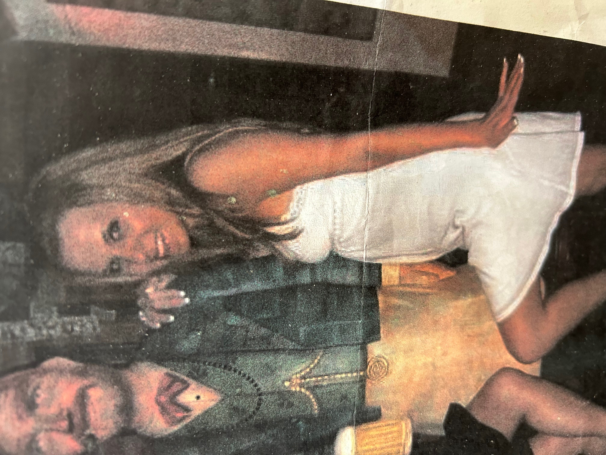

Remember A.O.L. or America Online from back in the day? I met on there one day this awesome gal and we hit it off big time. We even spoke on the phone a lot as well. She was so much fun to talk to as she enjoyed speaking to me as well. Unfortunately, we lived way out of state so meeting up was impossible. This was back in 2006. Today, it's the year 2026. Wow, twenty years ago!!! Through normal reasons life moved on for the both of us but today I still think about her. We were both the same age. Maybe she will see this website and drop me a line to say Hello. Maybe her family and friends will see this and contact me instead... first? I hope she is doing well today! I really mean well here. Thank you!

HERE I AM, IT'S BILLY, AS ABOVE IS A CURRENT PICTURE OF ME: I am now back in the Northern NJ area as I bounced around out of state in the past for my Graphic Design Jobs. I am single, never married, and with no kids, 🙏 It's a shame we both lived out of state from each other then. I hope her mom Lisa is well too.